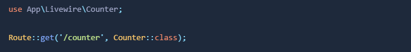

Es un framework para construir poderosos frontends que se sienten dinamicos, modernos, y vivos justo como cuando son construidos con freameworks modernos de JavaScript como Vue y React.
La misión de Livewire es construir con eficiencia y disfrutar del desarrollo de aplicaciones web con Laravel sacándole el máximo. Cualquier parte del desarrollo web que puede ser hecha mas fácil, nosotros hemos intentado o estamos intentando hacerla.
Crear formularios poderosos es una de las mayores fortalezas de Livewire. Tareas que de otro modo serían difíciles, como la validación en tiempo real y la carga de archivos, se simplifican muchísimo.
Mostrar datos de aplicaciones dentro de tablas es posiblemente la necesidad más común al crear aplicaciones web. Livewire es perfecto para esta tarea. Mostrar datos, paginar, filtrar y ordenar son trabajos muy sencillos con Livewire.
Mostrar gráficos de fuentes de datos en tiempo real se vuelve trivial en Livewire. Conecte una fuente de datos a su biblioteca de gráficos favorita y deje que Livewire la mantenga activa en la página.
Manejar la carga de archivos e imágenes es tradicionalmente una tarea difícil. Livewire se encarga de todo: validación, cargas temporales, vista previa de imágenes; todo.
En lugar de retrasar la carga de una página completa para un solo componente con una gran consulta de base de datos, Livewire hace que sea increíblemente fácil mostrar un indicador de carga y cargar lentamente el componente en la página.
Livewire tiene innumerables funciones que facilitan la creación de interfaces. Si encuentra algo que no puede hacer en Livewire, es casi seguro que puede hacerlo en Alpine, que hemos creado para desbloquear posibilidades ilimitadas.
Se puede instalar junto con Breeze siguiendo los pasos de la instalación de Breeze.
Alternativamente, se puede instalar con el comando:
composer require livewire/livewire
Si se intala con este comando, debe asegurarse que el proyecto no contenga previamente instalado Alpine. De otra manera Livewire no va a funcionar, porque Alpine será cargado dos veces.
En el caso de que hayas instalado el kit de inicio "Blade con Alpine", debes remover Alpine de resources/js/app.js
Livewire proporciona un práctico comando Artisan para generar nuevos componentes rápidamente. Ejecute el siguiente comando para crear un nuevo componente:
php artisan make:livewire component_name
Por ejemplo con un component_name igual a counter el comando genera los siguientes archivos:
CLASS: app/Livewire/Counter.php
VIEW: resources/views/livewire/counter.blade.php
Vamos a crear un contador con livewire. Primero se escribiremos la clase app/Livewire/Counter.php:

A continuación, escribimos la vista resources/views/livewire/counter.blade.php que funcionará como el HTML del componente. Es importante que los componentes tengan un solo elemento como raíz y se recomienda que este sea un div, si hay mas de un elemento como raíz se lanzará un error. Además, los comentarios HTML también cuentan como elementos, por lo que deben ser colocados dentro del elemento raíz.
Registramos una ruta para acceder a nuestro componente.

Por último, nesecitamos una plantilla HTML en la cual renderizar el componente. Por defecto, Livewire buscará la plantilla resources/views/components/layouts/app.blade.php. Si esta no existe en el proyecto la puedes generar con el comando:
php artisan livewire:layout
El componente será renderizado en la variable $slot.
Quizas notaste que no hay assets de JavaScript ni CSS proveidos por Livewire. Esto es porque Livewire 3 automaticamente inyecta cualquier asset frontend que nesecite.
Ahora si, el componente esta listo ¡Puedes usarlo visitando la ruta /counter!
Esta es la magia de Livewire, ¡Compoenentes dinamicos en el frontend sin dejar PHP!